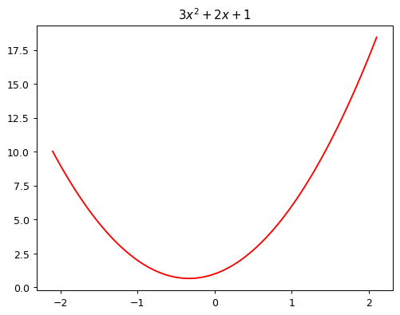
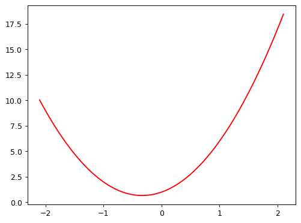
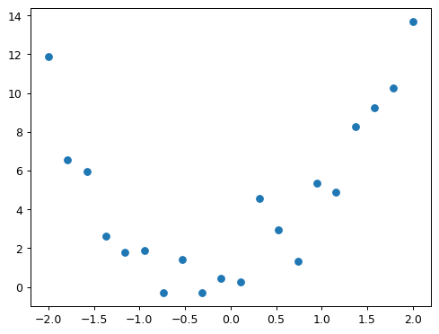
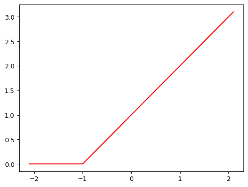

from ipywidgets import interact
from fastai.basics import *
plt.rc('figure', dpi=90)
def plot_function(f, title=None, min=-2.1, max=2.1, color='r', ylim=None):
x = torch.linspace(min,max, 100)[:,None]
if ylim: plt.ylim(ylim)
plt.plot(x, f(x), color)
if title is not None: plt.title(title)How does a neural net really work?
2025-06-08

Fitting a function with gradient descent
Note
This notebook is a copy of How does a neural net really work? by Jeremy Howard as part of the Fast.ai course Practical Deep Learning for Coders.
I added and removed code and markdown here and there reflecting my own understanding of the topic. Not very interesting (aka boring) for 99+% of you, it is mostly for my own reference. My comments are marked with <mark>…</mark> 1.
For drone related stuff, see the Code, Fly & AI Series.
A neural network is just a mathematical function. In the most standard kind of neural network, the function:
- Multiplies each input by a number of values. These values are known as parameters
- Adds them up for each group of values
- Replaces the negative numbers with zeros
This represents one “layer”. Then these three steps are repeated, using the outputs of the previous layer as the inputs to the next layer. Initially, the parameters in this function are selected randomly. Therefore a newly created neural network doesn’t do anything useful at all – it’s just random!
<mark>If you don’t use random parameters, but the same number for each parameter, the function won’t be able to learn anything, because each node in the layer will be the same, and the output will be the same for all inputs.</mark>
To get the function to “learn” to do something useful, we have to change the parameters to make them “better” in some way. We do this using gradient descent. Let’s see how this works…
To learn how gradient descent works, we’re going to start by fitting a quadratic, since that’s a function most of us are probably more familiar with than a neural network. Here’s the quadratic we’re going to try to fit:
def f(x): return 3*x**2 + 2*x + 1
plot_function(f, "$3x^2 + 2x + 1$")
This quadratic is of the form \(ax^2+bx+c\), with parameters \(a=3\), \(b=2\), \(c=1\). To make it easier to try out different quadratics for fitting a model to the data we’ll create, let’s create a function that calculates the value of a point on any quadratic:
def quad(a, b, c, x): return a*x**2 + b*x + cIf we fix some particular values of a, b, and c, then we’ll have made a quadratic. To fix values passed to a function in python, we use the partial function, like so:
def mk_quad(a,b,c): return partial(quad, a,b,c)<mark>So what we did here is freeze the function for a set of fixed parameters. We can now use this function to calculate the value of the quadratic for any x we pass to it. It is like we stored a model to use for inference.</mark>
So for instance, we can recreate our previous quadratic:
f2 = mk_quad(3,2,1)
plot_function(f2)
Now let’s simulate making some noisy measurements of our quadratic f. We’ll then use gradient descent to see if we can recreate the original function from the data.
Here’s a couple of functions to add some random noise to data:
def noise(x, scale): return np.random.normal(scale=scale, size=x.shape)
def add_noise(x, mult, add): return x * (1+noise(x,mult)) + noise(x,add)Let’s use the now to create our noisy measurements based on the quadratic above:
np.random.seed(42)
x = torch.linspace(-2, 2, steps=20)[:,None]
y = add_noise(f(x), 0.15, 1.5)<mark>What is that [:,None] doing there? Let’s inspect what is happening…</mark>
a = torch.linspace(-2, 2, steps=4)
print("Original tensor:", a)
print("Shape:", a.shape)
print("Number of dimensions:", a.ndim)Original tensor: tensor([-2.0000, -0.6667, 0.6667, 2.0000])
Shape: torch.Size([4])
Number of dimensions: 1b = a[:, None]
print("Shape after [:, None]:", b.shape)
print("Number of dimensions now:", b.ndim)
print("The actual tensor looks like:")
print(b)Shape after [:, None]: torch.Size([4, 1])
Number of dimensions now: 2
The actual tensor looks like:
tensor([[-2.0000],
[-0.6667],
[ 0.6667],
[ 2.0000]])<mark>[:] after a list is typically a slice. In PyTorch and Numpy you can actually use commas to address multiple dimensions of the array/tensor. Apparently, if you use [:, None], it adds a new axis to the array. In this case, it is reshaping the 1D array of four values into a 2D array with one column.</mark>
<mark>The reason this is done is that the np.random.normal function expects a 2D array as input, where each row represents a sample and each column represents a feature. By reshaping the array to have one column, we ensure that the input meets this requirement.</mark>
Here’s the first few values of each of x and y:
x[:5],y[:5](tensor([[-2.0000],
[-1.7895],
[-1.5789],
[-1.3684],
[-1.1579]]),
tensor([[11.8690],
[ 6.5433],
[ 5.9396],
[ 2.6304],
[ 1.7947]], dtype=torch.float64))As you can see, they’re tensors. A tensor is just like an array in numpy. A tensor can be a single number (a scalar or rank-0 tensor), a list of numbers (a vector or rank-1 tensor), a table of numbers (a matrix or rank-0 tensor), a table of tables of numbers (a rank-3 tensor), and so forth.
We’re not going to learn much about our data by just looking at the raw numbers, so let’s draw a picture:
plt.scatter(x,y);
How do we find values of a, b, and c which fit this data? One approach is to try a few values and see what fits. Here’s a function which overlays a quadratic on top of our data, along with some sliders to change a, b, and c, and see how it looks:
@interact(a=1.1, b=1.1, c=1.1)
def plot_quad(a, b, c):
plt.scatter(x,y)
plot_function(mk_quad(a,b,c), ylim=(-3,13))<mark>The widget with sliders doesn’t work here in the blog, but it does in the notebook. You can try it out in the notebook on Colab.</mark>
Try moving slider a a bit to the left. Does that look better or worse? How about if you move it a bit to the right? Find out which direction seems to improve the fit of the quadratic to the data, and move the slider a bit in that direction. Next, do the same for slider b: first figure out which direction improves the fit, then move it a bit in that direction. Then do the same for c.
OK, now go back to slider a and repeat the process. Do it again for b and c as well.
Did you notice that by going back and doing the sliders a second time that you were able to improve things a bit further? That’s an important insight – it’s only after changing b and c, for instance, that you realise that a actually needs some adjustment based on those new values.
One thing that’s making this tricky is that we don’t really have a great sense of whether our fit is really better or worse. It would be easier if we had a numeric measure of that. On easy metric we could use is mean absolute error – which is the distance from each data point to the curve:
def mae(preds, acts): return (torch.abs(preds-acts)).mean()<mark>Let’s see how this works. We use the torch.abs function to calculate the absolute value of each element in a tensor, and then we can use the mean tensor method to calculate the mean of those absolute values. The error is reduced to a single number as this is an easy way to see how the model is doing so far.</mark>
a=1.1
b=1.1
c=1.1
f = mk_quad(a,b,c)
print("Function parameters:", a, b, c)
print("Function output for x[:5]:", f(x[:5]))
print("Actual values for y[:5]:", y[:5])
print(abs(f(x[:5]) - y[:5]))
print("Mean Absolute Error:", mae(f(x), y))Function parameters: 1.1 1.1 1.1
Function output for x[:5]: tensor([[3.3000],
[2.6540],
[2.1055],
[1.6546],
[1.3011]])
Actual values for y[:5]: tensor([[11.8690],
[ 6.5433],
[ 5.9396],
[ 2.6304],
[ 1.7947]], dtype=torch.float64)
tensor([[8.5690],
[3.8893],
[3.8341],
[0.9758],
[0.4936]], dtype=torch.float64)
Mean Absolute Error: tensor(2.4219, dtype=torch.float64)We’ll update our interactive function to print this at the top for us.
Use this to repeat the approach we took before to try to find the best fit, but this time just use the value of the metric to decide which direction to move each slider, and how far to move it.
This time around, try doing it in the opposite order: c, then b, then a.
You’ll probably find that you have to go through the set of sliders a couple of times to get the best fit.
@interact(a=1.1, b=1.1, c=1.1)
def plot_quad(a, b, c):
f = mk_quad(a,b,c)
plt.scatter(x,y)
loss = mae(f(x), y)
plot_function(f, ylim=(-3,12), title=f"MAE: {loss:.2f}")In a modern neural network we’ll often have tens of millions of parameters to fit, or more, and thousands or millions of data points to fit them to. We’re not going to be able to do that by moving sliders around! We’ll need to automate this process.
Thankfully, that turns out to be pretty straightforward. We can use calculus to figure out, for each parameter, whether we should increase or decrease it.
Automating gradient descent
The basic idea is this: if we know the gradient of our mae() function with respect to our parameters, a, b, and c, then that means we know how adjusting (for instance) a will change the value of mae(). If, say, a has a negative gradient, then we know that increasing a will decrease mae(). Then we know that’s what we need to do, since we trying to make mae() as low as possible.
So, we find the gradient of mae() for each of our parameters, and then adjust our parameters a bit in the opposite direction to the sign of the gradient.
To do this, first we need a function that takes all the parameters a, b, and c as a single vector input, and returns the value mae() based on those parameters:
def quad_mae(params):
f = mk_quad(*params)
return mae(f(x), y)Let’s try it:
quad_mae([1.1, 1.1, 1.1])tensor(2.4219, dtype=torch.float64)Yup, that’s the same as the starting mae() we had in our plot before.
We’re first going to do exactly the same thing as we did manually – pick some arbritrary starting point for our parameters. We’ll put them all into a single tensor:
abc = torch.tensor([1.1,1.1,1.1])To tell PyTorch that we want it to calculate gradients for these parameters, we need to call requires_grad_():
abc.requires_grad_()tensor([1.1000, 1.1000, 1.1000], requires_grad=True)We can now calculate mae(). Generally, when doing gradient descent, the thing we’re trying to minimise is called the loss:
loss = quad_mae(abc)
losstensor(2.4219, dtype=torch.float64, grad_fn=<MeanBackward0>)To get PyTorch to now calculate the gradients, we need to call backward()
loss.backward()The gradients will be stored for us in an attribute called grad:
abc.gradtensor([-1.3529, -0.0316, -0.5000])<mark>The backward() function calculates the gradient of the loss with respect to the parameters. The gradients are stored in the grad attribute of each parameter tensor. But what do these actual values represent? Jeremy answered this question in the video lesson: the numbers represent the change of the loss when the parameters increase by a value of one (if the slope stayed constant, which is not the case obviously).</mark>
According to these gradients, all our parameters are a little low. So let’s increase them a bit. If we subtract the gradient, multiplied by a small number, that should improve them a bit:
with torch.no_grad():
abc -= abc.grad*0.01
loss = quad_mae(abc)
print(f'loss={loss:.2f}')loss=2.40Yes, our loss has gone down!
The “small number” we multiply is called the learning rate, and is the most important hyper-parameter to set when training a neural network.
BTW, you’ll see we had to wrap our calculation of the new parameters in with torch.no_grad(). That disables the calculation of gradients for any operations inside that context manager. We have to do that, because abc -= abc.grad*0.01 isn’t actually part of our quadratic model, so we don’t want derivatives to include that calculation.
<mark>To understand this, I had to go back to the part where the loss was calculated the first time, which resulted in tensor(2.4219, dtype=torch.float64, grad_fn=<MeanBackward0>). This grad_fn is a graph of mathematical functions that have been applied to our tensor abc. When loss.backward() is called, this graph of functions is the basis for the calculation of the derivative of it. The resulting values are assigned to abc.grad.
<mark>So PyTorch keeps track of all operations that are applied to this tensor, but we don’t want to apply it to the step function (abc -= abc.grad*0.01), because that is not part of the loss function, but rather a step in the optimization process. So we use with torch.no_grad() to tell PyTorch not to track this operation. </mark>
<mark>The fact that loss = quad_mae(abc) is also under the no_grad() context is because the loss was already calculated in a previous cell. Yeah, that makes it a bit confusing. Normally we would’t do that, as can be seen below in the loop.</mark>
We can use a loop to do a few more iterations of this:
for i in range(10):
loss = quad_mae(abc)
loss.backward()
with torch.no_grad(): abc -= abc.grad*0.01
print(f'step={i}; loss={loss:.2f}')step=0; loss=2.40
step=1; loss=2.36
step=2; loss=2.30
step=3; loss=2.21
step=4; loss=2.11
step=5; loss=1.98
step=6; loss=1.85
step=7; loss=1.72
step=8; loss=1.58
step=9; loss=1.46As you can see, our loss keeps going down!
If you keep running this loop for long enough however, you’ll see that the loss eventually starts increasing for a while. That’s because once the parameters get close to the correct answer, our parameter updates will jump right over the correct answer! To avoid this, we need to decrease our learning rate as we train. This is done using a learning rate schedule, and can be automated in most deep learning frameworks, such as fastai and PyTorch.
<mark>This might be the case (overshooting), but the code above also contains a bug: the value of abc.grad is accumulated for each iteration of the loop. We therefore need to reset the gradient each iteration:</mark>
abc = torch.tensor([1.1,1.1,1.1])
abc.requires_grad_()
for i in range(100):
loss = quad_mae(abc)
loss.backward()
with torch.no_grad(): abc -= abc.grad*0.1 # I used a larger learning rate here
abc.grad.zero_() # Reset gradients to zero
print(f'step={i}; loss={loss:.2f}')step=0; loss=2.42
step=1; loss=2.21
step=2; loss=2.01
step=3; loss=1.82
step=4; loss=1.67
step=5; loss=1.55
step=6; loss=1.46
step=7; loss=1.38
step=8; loss=1.31
step=9; loss=1.24
step=10; loss=1.19
step=11; loss=1.17
step=12; loss=1.14
step=13; loss=1.12
step=14; loss=1.10
step=15; loss=1.10
step=16; loss=1.10
step=17; loss=1.09
step=18; loss=1.09
step=19; loss=1.09
step=20; loss=1.09
step=21; loss=1.08
step=22; loss=1.08
step=23; loss=1.08
step=24; loss=1.07
step=25; loss=1.07
step=26; loss=1.07
step=27; loss=1.07
step=28; loss=1.06
step=29; loss=1.06
step=30; loss=1.06
step=31; loss=1.05
step=32; loss=1.05
step=33; loss=1.05
step=34; loss=1.05
step=35; loss=1.04
step=36; loss=1.04
step=37; loss=1.04
step=38; loss=1.03
step=39; loss=1.03
step=40; loss=1.03
step=41; loss=1.04
step=42; loss=1.03
step=43; loss=1.03
step=44; loss=1.03
step=45; loss=1.03
step=46; loss=1.02
step=47; loss=1.03
step=48; loss=1.02
step=49; loss=1.02
step=50; loss=1.02
step=51; loss=1.02
step=52; loss=1.01
step=53; loss=1.01
step=54; loss=1.02
step=55; loss=1.01
step=56; loss=1.01
step=57; loss=1.01
step=58; loss=1.01
step=59; loss=1.01
step=60; loss=1.01
step=61; loss=1.01
step=62; loss=1.01
step=63; loss=1.01
step=64; loss=1.01
step=65; loss=1.00
step=66; loss=1.01
step=67; loss=1.01
step=68; loss=1.01
step=69; loss=1.01
step=70; loss=1.00
step=71; loss=1.01
step=72; loss=1.00
step=73; loss=1.00
step=74; loss=1.00
step=75; loss=0.99
step=76; loss=1.00
step=77; loss=1.00
step=78; loss=1.01
step=79; loss=1.00
step=80; loss=1.00
step=81; loss=0.99
step=82; loss=1.00
step=83; loss=1.00
step=84; loss=1.00
step=85; loss=1.00
step=86; loss=1.00
step=87; loss=0.99
step=88; loss=0.99
step=89; loss=0.99
step=90; loss=1.00
step=91; loss=0.99
step=92; loss=0.99
step=93; loss=0.99
step=94; loss=0.99
step=95; loss=0.99
step=96; loss=1.00
step=97; loss=0.99
step=98; loss=0.99
step=99; loss=0.99How a neural network approximates any given function
But neural nets are much more convenient and powerful than this example showed, because we can learn much more than just a quadratic with them. How does that work?
The trick is that a neural network is a very expressive function. In fact – it’s infinitely expressive. A neural network can approximate any computable function, given enough parameters. A “computable function” can cover just about anything you can imagine: understand and translate human speech; paint a picture; diagnose a disease from medical imaging; write an essay; etc…
The way a neural network approximates a function actually turns out to be very simple. The key trick is to combine two extremely basic steps:
- Matrix multiplication, which is just multiplying things together and then adding them up
- The function \(max(x,0)\), which simply replaces all negative numbers with zero.
In PyTorch, the function \(max(x,0)\) is written as np.clip(x,0). The combination of a linear function and this max() is called a rectified linear function, and it can be implemented like this:
def rectified_linear(m,b,x):
y = m*x+b
return torch.clip(y, 0.)Here’s what it looks like:
plot_function(partial(rectified_linear, 1,1))
BTW, instead of torch.clip(y, 0.), we can instead use F.relu(x), which does exactly the same thing. In PyTorch, F refers to the torch.nn.functional module.
import torch.nn.functional as F
def rectified_linear2(m,b,x): return F.relu(m*x+b)
plot_function(partial(rectified_linear2, 1,1))To understand how this function works, try using this interactive version to play around with the parameters m and b:
@interact(m=1.5, b=1.5)
def plot_relu(m, b):
plot_function(partial(rectified_linear, m,b), ylim=(-1,4))As you see, m changes the slope, and b changes where the “hook” appears. This function doesn’t do much on its own, but look what happens when we add two of them together:
def double_relu(m1,b1,m2,b2,x):
return rectified_linear(m1,b1,x) + rectified_linear(m2,b2,x)
@interact(m1=-1.5, b1=-1.5, m2=1.5, b2=1.5)
def plot_double_relu(m1, b1, m2, b2):
plot_function(partial(double_relu, m1,b1,m2,b2), ylim=(-1,6))If you play around with that for a while, you notice something quite profound: with enough of these rectified linear functions added together, you could approximate any function with a single input, to whatever accuracy you like! Any time the function doesn’t quite match, you can just add a few more additions to the mix to make it a bit closer. As an experiment, perhaps you’d like to try creating your own plot_triple_relu interactive function, and maybe even include the scatter plot of our data from before, to see how close you can get?
This exact same approach can be expanded to functions of 2, 3, or more parameters.
<mark>And here ends Jeremy’s notebook. We know that the trick to create a neural net is to add these two concepts together by connecting linear functions with a ReLU function in between. That will be something for the next lesson (chapter four of the book). See you then!</mark>
Footnotes
Did you know I used the <mark> tag for that? I’m so grateful they named it like that!↩︎